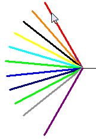
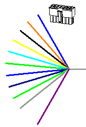

Create a connector drawing view
-
Choose Diagram tab→Views group→Connector.
-
Select a conductor.

-
Set options on the Drawing View Creation Wizard (Drawing View Options) tab as needed, and then click Next.
-
In the Drawing View Wizard, on the Drawing View Creation Wizard (Drawing View Layout) tab, do one of the following:
-
Select a named view as the primary view for the drawing, and then click Finish.
-
Click Custom to access the Custom Orientation dialog box. Use the options at the top of the Custom Orientation window to orient the part or assembly, and then click Close.
-
-
Use the command bar options to adjust how the view or views are placed on the drawing sheet.
Note:By default, the scale is always is 1:1.
-
Click to specify the location of the view or views on the sheet.

How do I
Create a connector tableLearn more
Creating connector viewsCreating connector tables
Look up more details
Connector Drawing View commandConnector Table command
Connector Table Properties dialog box
Related Topics
Connector Table command barOptions tab (Connector Table Properties dialog box)
Update a connector table